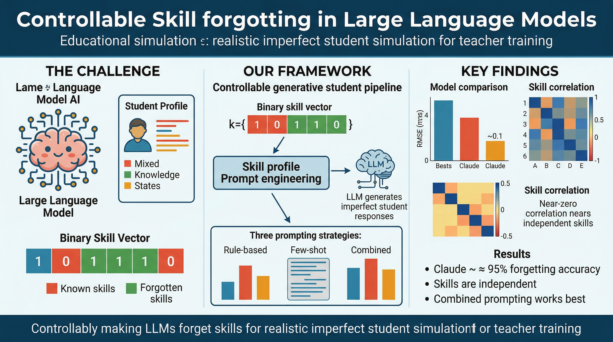
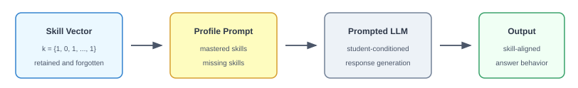
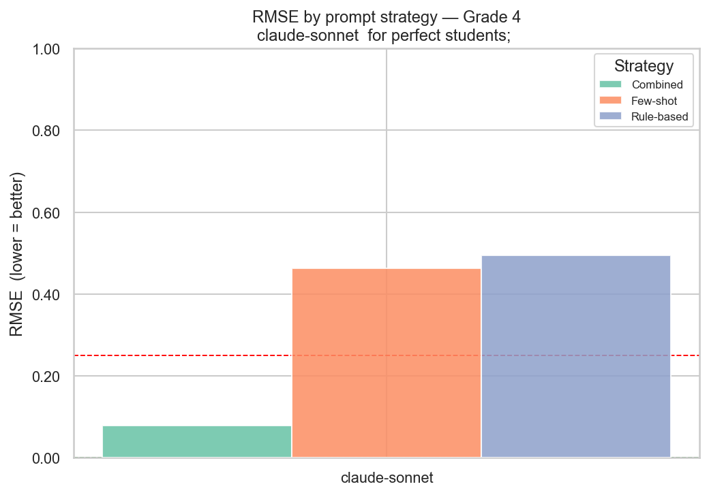
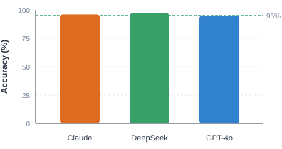
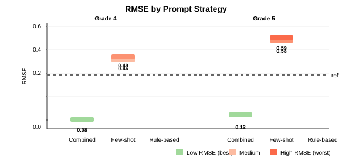
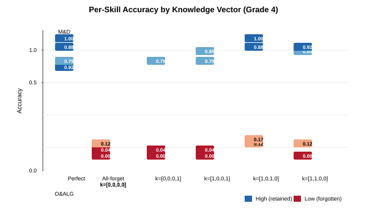
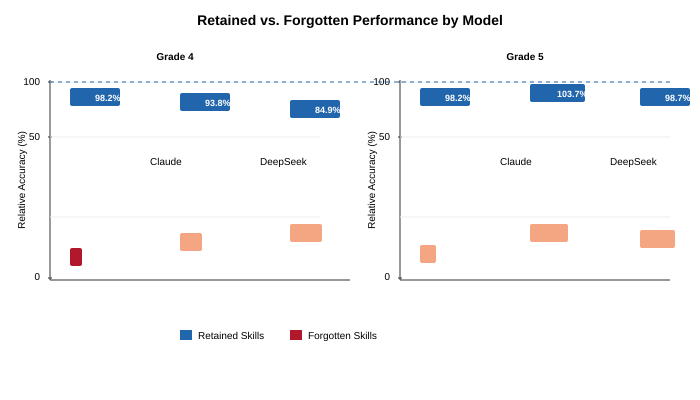
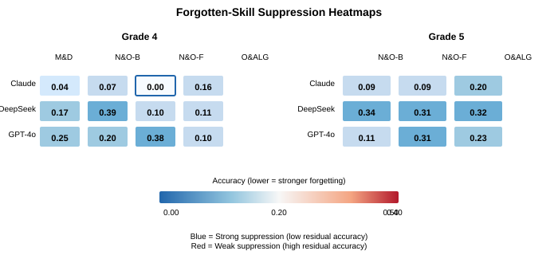
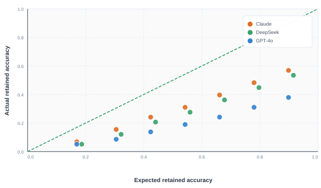

Toward a Benchmark for Controllable Simulation of Imperfect Students with Large Language Models
Omri Sason1, Alexander Apartsin2, Yehudit Aperstein1
1Afeka College of Engineering 2Holon Institute of Technology
Keywords: large language models, educational simulation, teacher training, controllable generation, imperfect student simulation, benchmark design
Abstract
Large language models perform strongly on curriculum-aligned mathematics tasks, yet teacher preparation requires controllable imperfect learners rather than uniformly expert systems. This paper investigates whether prompted LLMs can simulate predefined patterns of retained and missing skills in a benchmark setting motivated by educational simulation.
We represent each simulated student with a binary skill vector and use prompt-based control to impose selective mastery constraints. Evaluation is conducted on MathCAMPS, a multi-grade mathematics benchmark aligned with U.S. Common Core standards, using rule-based, few-shot, and combined prompting across multiple frontier LLMs. The main detailed analyses focus on Grades 4 and 5 and on multiple-choice answer selection.
Behavior is assessed using per-skill accuracy, relative loss, controllability score, RMSE, and cross-skill analyses, allowing controllability to be distinguished from raw task performance. The reported experiments show that combined prompting yields the most reliable alignment with the intended mastery profile, while controllability varies substantially across model architectures. Retained skills remain comparatively stable, forgotten skills decline substantially, and inter-skill dependencies appear weak in the analyzed grades. Taken together, these results support the feasibility of prompt-based skill-aware behavioral control in a mathematics benchmark for imperfect-student simulation.

1. Introduction
Large language models have achieved unprecedented capabilities on structured reasoning tasks, with contemporary frontier models frequently exceeding 95% accuracy on standardized mathematics assessments and professional examinations. This remarkable performance has positioned LLMs as powerful tools across educational applications, from intelligent tutoring systems and automated assessment platforms to personalized learning companions. The trajectory of improvement suggests that LLM capabilities will continue to expand, potentially reaching expert-level performance across increasingly diverse domains.
Yet this very capability creates a fundamental paradox for a critical application: teacher training simulation. The effectiveness of teacher preparation programs depends critically on exposing novice teachers to authentic classroom variability, including students with diverse knowledge states, systematic misconceptions, and realistic error patterns. Computational simulation offers an ideal platform for providing such exposure in controlled, reproducible conditions. However, achieving this requires generating virtual students that are imperfect in precisely specified ways, not uniformly expert, but selectively deficient according to realistic profiles of human learning and forgetting.
1.1 Motivation: The Teacher Training Challenge
Teacher preparation represents one of the most critical yet underaddressed challenges in educational technology. Research consistently demonstrates that the transition from academic training to authentic classroom practice constitutes a formative phase where novice teachers face substantial difficulties (Ingersoll & Strong, 2011). The heterogeneity of real classrooms, with students exhibiting diverse skill levels, learning styles, and misconceptions, presents challenges that idealized, high-performing models simply cannot prepare teachers to address.
Ericsson's deliberate practice paradigm (1993) established that expert performance requires not merely accumulated experience, but structured engagement with challenges specifically designed to stretch the learner's current capabilities. For teacher development, this implies that effective preparation requires practice with diverse learner profiles at various developmental stages. Novice teachers must learn to recognize and respond to partial mastery, identify systematic misconceptions, and adapt instruction to meet learners where they are.
However, authentic classroom environments are inherently variable and unpredictable, making systematic repetition of instructional scenarios difficult or impossible. A teacher trainee might encounter a student struggling with fractions once, never to see that specific learning challenge again during their preparation. Computational simulation offers a principled solution: by generating virtual students with predefined characteristics, we can enable repeated, controlled practice with diverse learner profiles (Heffernan & Heffernan, 2014).
The key requirement is controlled imperfection: simulation systems must generate students who are imperfect in precisely specified ways. A simulator that produces uniformly expert-level responses, regardless of how impressive its capabilities, fails to prepare teachers for the authentic variability of real classrooms. We need generative models that can reliably simulate students with specified knowledge gaps while maintaining realistic patterns of retained knowledge.
1.2 The Fundamental Challenge: Why Controllability Differs from Performance
Current evaluation paradigms for LLMs center on measuring task performance, accuracy on benchmarks like MMLU, GSM8K, and HumanEval. This performance-oriented approach presupposes that higher accuracy indicates superior model quality, and considerable research has focused on pushing these metrics higher. This paradigm has driven remarkable progress, but it creates a fundamental misalignment when the goal shifts from maximization to specification.
In educational simulation, we do not necessarily want a model that performs well. We want a model that performs as specified. The specification might call for a student who has mastered addition but forgotten fractions, who responds correctly to addition problems but makes consistent errors on fraction problems. The challenge is not making the model accurate, but making it inaccurate in precisely controlled ways.
This distinction reveals a fundamental limitation: high baseline performance does not guarantee controllability. A model that achieves 95% accuracy on mathematics might nonetheless be incapable of reliably simulating a student who has forgotten specific skills. The knowledge representations that enable high performance may be deeply entrenched, resistant to modulation through contextual cues alone. We must therefore evaluate not just what models know, but the extent to which that knowledge can be selectively modulated.
We introduce controllability as a distinct evaluation dimension orthogonal to traditional performance metrics. Controllability measures the degree to which a model can be directed to exhibit predefined behavioral patterns through explicit specification. For educational simulation, this means the ability to simulate specified patterns of knowledge retention and forgetting, not just the ability to demonstrate knowledge.
1.3 The Skill vs. Fact Distinction: Why Skill Forgetting is Harder
Understanding controllability for educational simulation requires distinguishing between two fundamentally different types of forgetting: fact forgetting and skill forgetting. This distinction is critical for both evaluation methodology and practical implementation.
Fact forgetting, as explored in machine unlearning research (Bourtoule et al., 2021), concerns the removal of discrete factual assertions from model behavior. Facts have clear boundaries and unambiguous truth conditions: "Paris is the capital of France" is either asserted or it is not. Evaluating fact forgetting is straightforward, the model either correctly declines to state the targeted fact or fails to do so. Recent advances in machine unlearning (Pawelczyk et al., 2023; Li et al., 2024) and LLM unlearning (Wang et al., 2025; Li et al., 2025) have produced increasingly effective methods for fact-level knowledge removal.
Skill forgetting operates at fundamentally different level of abstraction. Skills represent generalizable competencies, sets of related abilities enabling correct performance across families of related tasks. The skill "solving linear equations" encompasses numerous specific problem types, each requiring appropriate application of underlying principles to different contexts. Unlike facts, skills lack crisp definitional boundaries. The question "At what point does forgetting begin?" admits no simple answer.
This boundary ambiguity introduces measurement challenges that fact forgetting does not face. Skill mastery exists along a continuum, manifesting differently across varied problem types. A student who has "forgotten" fractions might still solve some fraction problems correctly, depending on problem structure, difficulty, and specific misconceptions. Unlike fact forgetting, where complete success means never stating the fact, skill forgetting requires navigating a space of partial, systematic failures reflecting the underlying nature of the knowledge gap.
Furthermore, skills exhibit hierarchical relationships and dependencies. Forgetting "algebraic fraction manipulation" may have differential effects on more fundamental arithmetic skills. The structured nature of skill forgetting, errors that reflect specific misconceptions rather than random mistakes, requires evaluation approaches that capture not just accuracy reduction but behavioral pattern alignment.
1.4 Additional Challenges: Why Prompt-Based Control is Non-Trivial
Achieving controllable skill forgetting through prompt-based instructions faces additional challenges that distinguish this task from conventional prompt engineering.
Deep knowledge entrenchment. Contemporary LLMs acquire knowledge through extensive pretraining on vast corpora of human-generated text. This process creates deeply entrenched internal representations that may resist modification through contextual cues alone. When explicitly instructed to "forget" a skill, models may continue applying that knowledge due to the strength of pretraining effects.
Interference effects. Skills are not isolated but interconnected through shared underlying concepts and reasoning strategies. Suppressing one skill might induce unintended degradation in related competencies, a phenomenon analogous to catastrophic interference in neural network training. Conversely, instructions to forget might paradoxically reinforce related knowledge through emphasis or repetition.
Evaluation methodology. Traditional accuracy-based metrics fail to capture the nuanced nature of skill forgetting. A model achieving 50% accuracy on a skill domain might be exhibiting genuine forgetting, might find the material inherently challenging, or might be applying a flawed strategy that coincidentally produces correct answers. Disentangling these possibilities requires careful baseline comparison and qualitative analysis of response patterns.
Model resistance. Models trained with strong instruction-following objectives may resist behavioral modifications that conflict with their internalized representations. Understanding which architectures and training paradigms facilitate or impede controllability is essential for practical deployment.
1.5 Our Approach: Controllable Generative Students
This work introduces a formal framework for controllable generative students in large language models, enabling the generation of virtual students with precisely specified knowledge profiles. Our approach addresses the challenge through explicit skill representations, prompt-based control mechanisms, and controllability-oriented evaluation.
1.6 Research Questions and Contributions
Central Research Question
Can we configure a prompted LLM to selectively forget specified skills while reliably retaining others, enabling controllable simulation of imperfect student profiles?
This investigation addresses three sub-questions: (1) How effective are different prompting strategies at enforcing skill-level behavioral control? (2) How does controllability vary across model architectures? (3) Can skills be controlled independently without interference effects?
Contributions
We make four primary contributions:
A formal skill representation based on a binary skill-vector framework for explicit mastery specification;
Prompt-based control mechanisms that enforce selective retention and forgetting through structured student profiles;
Controllability-oriented metrics, including relative loss and controllability score, that separate compliance from baseline performance;
An evaluation methodology across prompting strategies and models for controllable imperfect student simulation.
The remainder of this paper is organized as follows. Section 2 reviews related work on teacher training, educational simulation, behavioral control, and knowledge tracing. Section 3 formalizes the problem and introduces the evaluation metrics. Section 4 describes the dataset. Section 5 presents the methodology. Section 6 reports the experimental results. Section 7 discusses implications and limitations. Section 8 concludes with future directions.
2. Related Work
2.1 Teacher Professional Development and Deliberate Practice
The transition from formal academic preparation to authentic classroom practice represents one of the most critical phases in a teacher's professional development. Ingersoll and Strong (2011) conducted a comprehensive meta-analysis demonstrating that structured induction support, including mentorship, guided reflection, and peer collaboration, significantly improves teacher retention, instructional effectiveness, and student achievement outcomes. Their work established that the first years of teaching require sustained, targeted support to develop adaptive expertise capable of meeting diverse learner needs.
Ericsson's deliberate practice paradigm (Ericsson et al., 1993) provides the theoretical foundation for expertise development, establishing that superior performance emerges not from innate talent or accumulated experience alone, but from focused, structured engagement with challenges specifically designed to improve performance. Applied to teacher development, this framework suggests that effective professional preparation requires repeated exposure to instructional scenarios calibrated to the learner's developmental level with immediate feedback and opportunities for modification.
However, authentic classroom environments are inherently variable and unpredictable, making systematic repetition of identical instructional scenarios difficult to achieve (Heffernan & Heffernan, 2014). Computational platforms offer a principled solution by enabling controlled, reproducible instructional interactions. The ASSISTments ecosystem demonstrated how web-based intelligent tutoring systems can bridge this gap, providing the deliberate practice conditions necessary for developing pedagogical expertise while maintaining curricular alignment.
2.2 LLM-Based Educational Simulation
Recent advances in large language models have enabled a new generation of educational simulation systems. Zhang et al. (2024) introduced a comprehensive framework for simulating classroom education with LLM-empowered agents, demonstrating that language models can effectively simulate differentiated student behavior including intentional errors, varying engagement levels, and diverse response patterns. Their work established qualitative alignment between predefined student profiles and generated behaviors, paving the way for simulation-based teacher training.
Lu and Wang (2024) formalized the concept of generative students using binary mastery vectors for representing learner knowledge states, demonstrating that LLMs can condition their responses on predefined skill profiles. This approach enables systematic generation of students with specified knowledge configurations. Chen et al. (2025) extended this direction with SimInstruct, a framework for collecting scaffolding dialogues between experts and LLM-simulated novices, enabling more naturalistic instructional interactions.
The application of LLMs to educational simulation extends beyond student modeling. SocraticLM (Liu et al., 2025) explored Socratic personalized teaching with LLMs, while Scarlatos et al. (2025) demonstrated training LLM-based tutors to improve student learning outcomes in dialogues. AI2T (Peng et al., 2024) proposed building trustable AI tutors through interactive teaching of self-aware learning agents. Dong et al. (2025) introduced adaptive tutoring dialogue planning for personalized education, and Taylor et al. (2025) demonstrated an LLM-guided tutoring system for social skills training. Collectively, these works establish LLM-based educational simulation as a promising direction for personalized learning and teacher preparation.
2.3 Persona and Behavioral Control in LLMs
Research on persona conditioning demonstrates that LLMs can adopt predefined behavioral traits through prompt design. PersonaLLM (Jiang et al., 2023) conducted systematic investigations into whether LLMs can express specified personality traits, finding that models can maintain stylistic consistency but perfect coherence remains challenging. The fidelity of persona expression varies substantially across models and trait dimensions.
Recent work has advanced both the evaluation and training of persona-consistent agents. PersonaGym (Samuel et al., 2025) provides a comprehensive benchmark for evaluating persona agents and LLMs. Ji et al. (2025) introduced persona-aware contrastive learning for enhancing persona consistency in role-playing. A survey by Tseng et al. (2024) examined the landscape of role-playing and personalization in LLMs, identifying key challenges in maintaining stable behavioral profiles. Wang et al. (2024) investigated personality consistency in quantized role-playing dialogue agents.
Behavioral steering approaches offer systematic methods for controlling LLM behavior. Liu et al. (2024) explored steering large language models through systematic approaches, while the DPRF framework (Wang et al., 2025) introduced dynamic persona refinement for optimizing behavior alignment between personalized LLM agents and humans. Moon et al. (2024) proposed virtual personas for language models via anthologies of backstories. Kadavath et al. (2022) demonstrated that language models mostly know what they know, providing insight into LLM metacognitive capabilities relevant to behavioral control.
2.4 Knowledge Removal and Behavioral Control
Related work on knowledge removal and behavioral steering is relevant because both ask whether language-model behavior can be altered in targeted ways. Existing studies, however, primarily focus on discrete factual knowledge or broad behavioral traits rather than curricular skill profiles. In educational simulation, the goal is not simply to remove an answer, but to induce a coherent pattern of partial mastery and structured deficiency across a family of related tasks.
This distinction is important. Facts typically admit clear truth conditions, whereas skills are distributed, contextual, and expressed through repeated performance. The present work therefore shifts attention from factual deletion to controllable simulation of imperfect students whose behavior must remain locally degraded on selected skills while remaining stable elsewhere.
2.5 Knowledge Tracing and Learner Modeling
Knowledge tracing has been a central problem in educational data mining for decades. Bayesian Knowledge Tracing (BKT) and its extensions model transitions between known and unknown states, while item response theory provides probabilistic models of student performance. Deep learning approaches have substantially advanced the field.
Deep Knowledge Tracing (DKT) (Piech et al., 2015) applied recurrent neural networks to model student knowledge states from sequential interaction data, demonstrating improved predictive performance while capturing complex temporal dependencies. Zhang et al. (2017) introduced Dynamic Key-Value Memory Networks (DKVMN), using dedicated memory structures to separately track knowledge components and their mastery levels. Pandey and Karypis (2019) proposed Self-Attentive Knowledge Tracing using transformer architectures.
Gervet et al. (2020) conducted comprehensive evaluation of when deep learning approaches outperform classical methods in knowledge tracing, finding that deep models excel with large interaction data but classical approaches remain competitive in low-data regimes. Shen et al. (2024) provided a comprehensive survey of knowledge tracing models, variants, and applications. Liu (2024) reviewed recent advances in deep learning-based knowledge tracing. Chen et al. (2024) introduced personalized knowledge tracing through student representation reconstruction.
Large-scale datasets have enabled new research directions. Choi et al. (2020) introduced EdNet, a large-scale hierarchical dataset for knowledge tracing in mathematics education. Badrinath and Pardos (2025) optimized Bayesian Knowledge Tracing with neural network parameter generation. Notably, all existing knowledge tracing approaches focus on detecting or predicting existing knowledge states. Our work addresses the complementary problem of deliberately inducing predefined knowledge gaps for controllable simulation.
2.6 Research Gaps and Positioning
Despite substantial progress in educational simulation, persona conditioning, behavioral control, and knowledge tracing, prior work still leaves several central questions unresolved.
Gap 1: Qualitative evaluation without standardized metrics. Existing work on LLM-based educational simulation predominantly employs qualitative evaluation, relying on human judgment to assess alignment between generated behaviors and intended profiles. No standardized framework exists for measuring controllability quantitatively.
Gap 2: Limited treatment of skill-level forgetting. Existing work more commonly addresses discrete facts or broad personas. Far less attention has been given to skill-level forgetting, where boundaries are inherently ambiguous and errors are expected to follow structured patterns rather than random failure.
Gap 3: No controllability measurement framework. Traditional evaluation metrics capture predictive performance but cannot distinguish between a model that has genuinely forgotten a skill and one that is simply performing poorly due to inherent difficulty. No framework exists for measuring controllability independently of baseline capability.
We address these gaps by introducing a formal framework for controllable imperfect student simulation with evaluation metrics that isolate behavioral compliance from raw performance, enabling reproducible comparison across models and prompting strategies.
3. Problem Formulation
3.1 Formal Definitions
Let $\mathcal{S}=\{s_1,\ldots,s_K\}$ denote the set of skill domains for a given grade, and let $\mathbf{k}=(k_1,\ldots,k_K)\in\{0,1\}^K$ denote the target mastery vector:
$k_i = 1$: Student has retained skill $s_i$
$k_i = 0$: Student has forgotten skill $s_i$
For each skill $s_i$, let $a_i^0 = A_{\mathrm{base}}(s_i)$ denote the baseline accuracy under the perfect-student configuration and let $a_i^* = A_{\mathrm{ctrl}}(s_i\mid\mathbf{k})$ denote the observed accuracy under profile $\mathbf{k}$. Thus, $\mathbf{k}_{\mathrm{perfect}}=(1,\ldots,1)$ represents full mastery, whereas any vector containing zeros represents an imperfect student with targeted skill gaps.
3.2 Evaluation Metrics
3.2.1 Relative Loss
Relative loss measures the proportional drop in performance relative to the perfect-student baseline:
Here $\varepsilon>0$ is a small constant preventing division by zero. For forgotten skills, larger values are desirable because they indicate stronger suppression. For retained skills, values near zero are desirable because they indicate preserved performance.
RMSE measures the discrepancy between the intended binary profile and the observed continuous performance profile. Lower values indicate closer alignment between specification and behavior.
This score rewards high accuracy on retained skills and low accuracy on forgotten skills. It lies in $[0,1]$, with $C=1$ indicating perfect agreement with the target profile.
3.2.4 Cross-Skill Influence
To assess interference across skills, we define the cross-skill influence matrix
where $\Delta_{ii}$ captures the direct effect of suppressing $s_i$ and $\Delta_{ij}$ for $i\neq j$ captures collateral effects on other skills. Off-diagonal values near zero indicate limited cross-skill interference within the analyzed setting.
Here $R=\{i:k_i=1\}$ is the set of retained skills. A score near zero indicates agreement with the theoretical expectation, a positive score indicates better-than-expected retention, and a negative score indicates under-performance.
4. Dataset
4.1 MathCAMPS
The empirical framework uses MathCAMPS: curriculum-aligned mathematics problems tagged to U.S. Common Core standards. Each standard maps to a domain treated as a distinct skill, enabling direct transformation from standards to skill taxonomy. This approach extends prior educational datasets such as EdNet (Choi et al., 2020), which established large-scale hierarchical benchmarks for knowledge tracing in mathematics education.
Eight grade-level datasets (grades 1-8) were created, each containing 100 multiple-choice questions balanced across skill domains. Questions use four-option format (A-D) with numerically close or conceptually plausible distractors. The present paper reports benchmark construction across grades 1-8, while the detailed controllability analyses shown in the main results focus on Grades 4 and 5.
4.2 Dataset Statistics
The MathCAMPS dataset is organized into eight grade-level datasets corresponding to grades 1 through 8. Each grade-specific dataset contains 100 multiple-choice questions balanced across the relevant skill domains for that grade.
4.2.1 Grade-Level Skill Families
Table 1 summarizes the grade-level skill families used to organize the benchmark. Throughout the paper, the term skill refers to the curricular unit used for evaluation, operationalized at the domain level in alignment with the Common Core domain structure described in the report.
Table 1: Grade-level skill families used to structure MathCAMPS.
Grade
Representative skill families
1
Operations and Algebraic Thinking; Number and Operations in Base Ten; Measurement and Data; Geometry
2
Operations and Algebraic Thinking; Number and Operations in Base Ten; Measurement and Data; Geometry
3
Operations and Algebraic Thinking; Number and Operations in Base Ten; Number and Operations with Fractions; Measurement and Data; Geometry
4
Operations and Algebraic Thinking; Number and Operations in Base Ten; Number and Operations with Fractions; Measurement and Data; Geometry
5
Operations and Algebraic Thinking; Number and Operations in Base Ten; Number and Operations with Fractions; Measurement and Data; Geometry
6
Ratios and Proportional Relationships; The Number System; Expressions and Equations; Geometry; Statistics and Probability
7
Ratios and Proportional Relationships; The Number System; Expressions and Equations; Geometry; Statistics and Probability
8
The Number System; Expressions and Equations; Functions; Geometry; Statistics and Probability
4.2.2 Example Skill-Annotated Items
Table 2 provides examples of how items were treated analytically. Each row shows a question, its associated skill label, and an example of the multiple-choice conversion procedure used when transforming open-format mathematics items into the four-option evaluation format.
Table 2: Example item annotations and open-to-multiple-choice conversion examples.
Grade
Skill family
Original open-format prompt
Illustrative multiple-choice version
4
Number and Operations in Base Ten
Write the value of the digit 7 in 3,742.
A) 7 B) 70 C) 700 D) 7000
5
Number and Operations with Fractions
Compute $\tfrac{3}{4}+\tfrac{1}{8}$.
A) $\tfrac{7}{8}$ B) $\tfrac{5}{8}$ C) $\tfrac{1}{2}$ D) $\tfrac{3}{8}$
6
Ratios and Proportional Relationships
A recipe uses 2 cups of flour for 3 batches. How many cups are needed for 9 batches?
A) 4 B) 6 C) 8 D) 12
These examples clarify the annotation logic and the item-format conversion procedure described in the report: distractors are selected to be either numerically close to the correct answer or conceptually plausible errors for the targeted skill family.
4.2.3 Quality Control
During preprocessing and evaluation, certain items were identified as systematically ambiguous or poorly constructed because repeated cross-model errors suggested dataset artifacts rather than intended skill gaps. These items were replaced with alternatives from the same educational standard while preserving skill balance.
4.3 Per-Skill Mastery
$$\mathrm{Acc}(s_i) = \frac{c_i}{n_i}$$
Here $c_i$ is the number of correct responses on items tagged with skill $s_i$, and $n_i$ is the number of evaluated items for that skill. This quantity is the basic observable used throughout the analysis.
5. Methodology
5.1 Controllable Generative Student

Figure 1: Controllable Generative Student Architecture. A simulated student is defined by a binary skill vector $\mathbf{k}=(k_1,k_2,\ldots,k_K)$, where each element corresponds to an evaluated skill. Values of 1 represent retained skills and values of 0 represent intentionally suppressed skills used to simulate knowledge gaps. The vector is translated into retained and missing skill sets and embedded into a structured student profile prompt that conditions the LLM to produce aligned responses.
A binary skill vector such as $\mathbf{k}=(1,0,\ldots,1)$ defines the retained and suppressed skills assigned to a simulated student. Values of 1 indicate retained skills, whereas 0 indicates intentionally suppressed skills. The vector is translated into retained and missing skill sets and embedded into a structured student profile prompt that conditions the LLM to produce aligned responses.
5.2 Models
Table 3: Models evaluated in this study.
Model
Provider
Version
Characteristics
Claude
Anthropic
Claude
Safety-aligned, strong instruction-following
DeepSeek
DeepSeek
DeepSeek
High-performance, reasoning-optimized
GPT-4o
OpenAI
GPT-4o
General-purpose, widely used
All models demonstrated strong MathCAMPS baseline performance (>95% for Perfect Student), ensuring observed degradation reflects experimental manipulation rather than inherent limitations. Experiments used deterministic decoding (temperature = 0) to eliminate stochastic variation.
5.3 Prompting Strategies
Rule-Based: Explicit behavioral constraints instructing correct responses for mastered skills and consistent mistakes for forgotten skills.
Few-Shot: Demonstration examples illustrating both correct and incorrect behavior. Critically, examples are retrieved from an external file fully separated from evaluation datasets to prevent data leakage.
Combined: Integration of explicit rules with concrete demonstrations for maximum controllability.
Each prompt follows a consistent architecture containing: (1) student's mastered and missing skills description, (2) behavioral instructions and/or examples, and (3) the multiple-choice question. Crucially, the model is instructed to return exactly one answer option without explanation, ensuring standardized output suitable for quantitative analysis. Prompts are dynamically injected using programmatic formatting, enabling scalable generation of diverse student populations.
5.4 Experimental Protocol

Figure 2: Main experiment pipeline. Multiple simulated students, each defined by a different skill vector, answer collections of skill-tagged questions through multiple LLMs. Generated answers are then aggregated and analyzed to evaluate controllability, skill-level accuracy, and cross-skill influence.
The experiment begins with the construction of simulated students, each defined by a distinct mastery vector. For each analyzed grade, the experiment evaluates the enumerated skill profiles induced by the available binary skill dimensions. These students answer skill-tagged questions drawn from the grade-specific datasets, and their responses are generated by multiple LLMs. The outputs are then aggregated by skill domain and compared with the intended mastery vector.
5.5 Evaluation Procedure
Evaluation is performed at the student-model pair level and aggregated over all test items. For each skill $s_i$, we compute $\mathrm{Acc}(s_i)=c_i/n_i$, yielding the observed performance vector $\mathbf{a}^*=(a_1^*,\ldots,a_K^*)$. The profile-level metrics are then obtained by comparing $\mathbf{a}^*$ with the target vector $\mathbf{k}$. Throughout the Results section, reported ranges summarize variation across the analyzed grades and evaluated student profiles.
All experiments are conducted with temperature set to 0, ensuring deterministic model behavior and eliminating stochastic variation due to sampling. This allows observed differences to be attributed to prompt design and model characteristics rather than randomness.
Because decoding is deterministic, secondary statistical analyses can be computed directly from the preserved question-level, skill-level, and profile-level outputs without issuing additional LLM calls. Examples include profile-matched prompt comparisons, interval estimates for retained-forgotten gaps, and variance decomposition across model, prompt, grade, and skill-status factors.
5.6 Skill Independence and Multivariate Calibration
To study whether forgetting can remain localized, we analyze the dependence structure among skills using per-skill accuracy vectors observed over simulated students. Each student contributes a vector $\mathbf{a}=(a_1,\ldots,a_K)$, and the Pearson correlation matrix $\Sigma$ summarizes pairwise skill dependencies.
Correlation analysis: The observed correlations are weak across both grades. Grade 4 values remain close to zero, whereas Grade 5 shows somewhat stronger negative correlations, indicating only mild interference. This pattern is consistent with largely local controllability.
Multivariate calibration: As an analytical approximation, we model the skill-performance vector as $\mathbf{a}\sim\mathcal{N}(\boldsymbol{\mu},\Sigma)$. If forgetting is enforced on a subset $F\subset\{1,\ldots,K\}$ and the retained set is $R=\{1,\ldots,K\}\setminus F$, then the conditional expectation of retained performance is
where $\Sigma_{RF}$ is the cross-covariance block between retained and forgotten skills, and $\Sigma_{FF}$ is the covariance block over forgotten skills. If cross-skill coupling is weak, so that $\Sigma_{RF}\approx 0$, then
This approximation provides the expected retained-skill performance used in the later comparison between theoretical and observed behavior.
6. Results
6.1 Perfect Student Baseline

Figure 3: Perfect Student baseline accuracy for the fully retained profile $\mathbf{k}=(1,1,\ldots,1)$. The figure establishes the upper performance bound used throughout the paper.
Before introducing controlled forgetting, we establish the upper-bound performance. A Perfect Student is defined by the fully retained vector $\mathbf{k}=(1,1,\ldots,1)$, implying full mastery across all skills. Across grade-level datasets, several frontier models achieved performance exceeding 95% accuracy under this configuration, showing that near-perfect curriculum-aligned behavior is attainable and that later errors reflect deliberate skill suppression rather than inherent incapacity.
6.2 Prompt Strategy Comparison

Figure 4: RMSE comparison across prompting strategies by grade. Lower values indicate better alignment between target and observed behavior.
Table 3: RMSE by prompt strategy and grade. Lower values indicate closer alignment between target skill vector and observed behavior. The reference line represents random-baseline performance.
Grade
Combined
Few-shot
Rule-based
Reference
Grade 4
0.08
0.46
0.49
0.25
Grade 5
0.12
0.58
0.59
0.25
Prompt design is a critical factor in determining whether selective forgetting can be achieved in practice. The results show a clear and consistent pattern: the combined prompting strategy, which integrates explicit rules with demonstration examples, substantially outperforms the rule-based and few-shot alternatives. This suggests that neither explicit instructions nor examples alone are sufficient for reliable control; rather, their combination provides the strongest and most stable mechanism for aligning model behavior with the intended mastery vector.
6.3 Per-Skill Accuracy Across Knowledge Configurations

Figure 5: Per-skill accuracy across knowledge vector configurations (Grade 4). Each cluster shows accuracy for a different skill under six knowledge vector settings.
To understand how controllability operates at the individual skill level, we examine accuracy for each skill under different knowledge vector configurations. Figure 4 presents the complete accuracy matrix for Grade 4 across six different student profiles, ranging from perfect knowledge (k=[1,1,1,1]) to complete forgetting (k=[0,0,0,0]).
Table 4a: Per-skill accuracy across knowledge vector configurations (Grade 4). Each column represents a different simulated student profile defined by binary skill vector k, where 1 indicates retained and 0 indicates forgotten.
Skill Domain
Perfect k=[1,1,1,1]
All-forgotten k=[0,0,0,0]
k=[0,0,0,1] Missing=3
k=[1,0,0,1] Missing=2
k=[1,0,1,0] Missing=2
k=[1,1,0,0] Missing=2
Measurement & Data
0.88
0.04
0.04
0.85
0.88
0.85
Number & Ops (Base)
0.92
0.12
0.04
0.04
0.12
0.92
Number & Ops (Fractions)
1.00
0.00
0.00
0.00
1.00
0.00
Operations & Algebraic
0.79
0.12
0.79
0.79
0.17
0.12
6.4 Retained vs. Forgotten Performance: Detailed Breakdown

Figure 6: Retained vs. forgotten skill performance by model for Grades 4 and 5. Bars show relative accuracy as percentage of perfect-student baseline.
Beyond per-skill analysis, we aggregate performance into retained and forgotten skill sets. Figure 5 and Table 4b present the exact relative performance percentages for each model across both analyzed grades.
Table 4b: Exact retained and forgotten skill performance by model and grade. Values represent relative accuracy (imperfect student / perfect student × 100%).
Grade
Condition
Claude
DeepSeek
GPT-4o
Grade 4
Retained Skills
98.2%
93.8%
84.9%
Forgotten Skills
7.6%
22.0%
32.2%
Grade 5
Retained Skills
98.2%
103.7%
98.7%
Forgotten Skills
16.2%
38.4%
36.4%
6.5 Forgotten-Skill Suppression Heatmaps

Figure 7: Forgotten-skill suppression heatmaps for Grades 4 and 5. Values show accuracy on forgotten skills (lower = stronger suppression).
To visualize which specific skills are suppressed for each model, we present heatmaps of forgotten-skill accuracy. Figure 6 and Tables 5a-5b show color-coded matrices revealing the pattern of suppression across skill domains.
Table 5b: Forgotten-skill accuracy heatmap (Grade 5). Grade 5 contains three skill domains in the analyzed configuration.
Model
Number & Ops (Base)
Number & Ops (Fractions)
Operations & Algebraic
Claude
0.09
0.09
0.20
DeepSeek
0.34
0.31
0.32
GPT-4o
0.11
0.31
0.23
6.6 Model Controllability Summary
Figure 8: Model-wise comparison of perfect-student accuracy, retained-skill accuracy, and forgotten-skill accuracy for the analyzed grades.
Model architecture significantly impacts controllability. The reported results reveal clear differences among the tested models. The heatmap tables (5a, 5b) and retention analysis (Table 4b) together demonstrate that:
Claude achieves the strongest forgetting with 0.00-16% residual accuracy on forgotten skills across grades
GPT-4o falls between with 32-38% residual accuracy on forgotten skills
Key Finding: retention remains stable. Across both grades, retained skills remain close to the perfect-student baseline (84-104%), while forgotten skills drop substantially (7-38%). Claude exhibits the strongest forgetting effect, DeepSeek shows weaker forgetting and greater residual knowledge, and GPT-4o falls between the two. This separation indicates controlled and selective forgetting rather than general performance decline.
6.7 Skill Correlation Analysis
To assess whether suppressing one skill affects performance on other skills, we compute Pearson correlations between per-skill accuracy vectors across simulated student profiles. Tables 6a and 6b present the full correlation matrices for Grades 4 and 5.
Table 6a: Skill correlation matrix (Grade 4). Pearson correlations between accuracy vectors for each skill domain. Diagonal values are 1.00 by construction.
Figure 9: Pearson correlation matrices between skills for Grades 4 and 5.
Empirical correlation analysis indicates weak inter-skill dependencies in the analyzed grades. Grade 4 correlations remain close to zero, and Grade 5 shows somewhat stronger negative values, indicating mild interference rather than widespread dependence. These observations support a cautious interpretation that targeted forgetting can remain fairly localized within this benchmark setting.
6.8 Expected vs. Actual Accuracy

Figure 10: Expected versus actual retained-skill accuracy. Points below the diagonal indicate under-performance.
Prompt-based behavioral suppression is observable across all tested models under the benchmark setting, with the combined strategy achieving RMSE values 4-5× lower than alternatives (Table 3);
Per-skill controllability is achievable: The accuracy matrix (Table 4a) demonstrates that individual skills can be selectively suppressed while others remain at near-perfect levels, confirming independent skill control;
Retention remains comparatively stable (84-104% of baseline) while forgotten skills drop substantially (7-38%), indicating that suppression does not automatically imply broad performance collapse;
Skills show limited dependence (correlation matrices Tables 6a-6b), with off-diagonal values remaining near zero, supporting cautious claims of localized control within this benchmark;
Model architecture strongly affects controllability: Claude achieves strongest forgetting (0.00-16% residual), DeepSeek shows moderate suppression (22-39%), and GPT-4o falls between (32-38%); this ranking is visible in the suppression heatmaps (Tables 5a-5b).
7. Discussion
7.1 Controllability is Model-Dependent
The reported benchmark results indicate that controllability varies substantially across architectures. Claude demonstrates the strongest controllability on the reported measures, DeepSeek shows greater resistance despite strong baseline performance, and GPT-4o occupies an intermediate position. High baseline accuracy therefore does not, by itself, guarantee strong controllability in this benchmark setting.
7.2 Prompt Design is Necessary but Not Sufficient
Combined prompting substantially outperforms individual approaches. Rules define the desired behavior explicitly, while examples demonstrate how that behavior should appear in practice. Their combination therefore creates a complementary effect that is not achieved by either component alone.
7.3 Skill Independence Enables Localized Control
As demonstrated in the correlation analysis, inter-skill correlations are weak in the analyzed grades, which is consistent with fairly localized behavioral control. The multivariate calibration framework provides an analytical interpretation of this pattern, but it should be understood as an approximation rather than as a validated generative model of student skill performance.
Despite these encouraging findings, several constraints shape the scope and generalizability of our contributions.
7.4 Limitations
Grades analyzed in depth: Although the benchmark was constructed for grades 1-8, the detailed controllability analyses reported in the main paper focus on Grades 4 and 5.
Construct validity: Alignment to a target skill vector should not be equated with full pedagogical realism, misconception fidelity, or authentic classroom interaction.
Binary mastery assumption: Oversimplifies continuous knowledge states. Future work should explore continuous mastery scales (0-1) to better reflect gradual learning progress.
Single-skill per question: May not reflect real educational content where problems often require multiple skills. Hierarchical skill representations could address this.
Answer-only evaluation: The current benchmark evaluates selected answers rather than full explanations or tutoring dialogue, limiting conclusions about pedagogical realism.
Prompt-based control only: Fine-tuning approaches remain unexplored and may yield stronger behavioral control.
Mathematical domain: Generalizability to other subjects (science, language arts, programming) untested.
Computational cost: Full enumeration of $2^K$ skill configurations scales exponentially with skill count. For large-scale deployments, sampling-based approaches may be necessary.
Item revision procedure: Replacing items after repeated cross-model errors may improve surface quality but can also introduce benchmark-selection bias if not governed by a separately archived audit trail.
Skill difficulty: Certain skills may exhibit higher resistance to forgetting prompts than others. Systematic investigation of skill-level difficulty factors remains future work.
Educational misconceptions: Current framework simulates random skill gaps but does not model specific student misconceptions (e.g., fraction misconceptions identified in mathematics education research). Extending the framework to include misconception-based forgetting would enhance realism.
7.5 Reproducibility
This section summarizes the information required to interpret the reported experiments. All experiments use deterministic decoding with temperature = 0, and the evaluation operates on explicit student-profile vectors and skill-tagged item sets.
Models: Claude, DeepSeek, and GPT-4o.
Dataset: MathCAMPS curriculum-aligned mathematics questions with explicit skill annotations, spanning grades 1-8 with 100 questions per grade balanced across skill domains. The detailed analyses reported in the main text focus on Grades 4 and 5.
Prompt templates: The study uses rule-based, few-shot, and combined prompting strategies, as described in Section 5.3.
Scoring and code availability: The paper defines the scoring framework and reported metrics used to generate the results in Sections 3 and 5.
8. Conclusion
This paper introduced a benchmark-oriented framework for controllable simulation of imperfect students with large language models. By representing student knowledge with explicit binary skill vectors and evaluating behavior at the skill level, the study shows that selective retention and suppression can be measured in a principled way within a mathematics benchmark setting. Across the reported experiments, combined prompting provides the most reliable alignment between the target mastery profile and observed model behavior, although the strength of controllability remains strongly model-dependent.
Broader Impact. This work supports benchmark-level study of controllable imperfect-student behavior and may inform future teacher-training simulations. Potential misuse includes creating educational tools that appear more learner-realistic than they are, so deployment should remain subject to human oversight and explicit validity testing.
Reproducibility. All experiments use deterministic decoding with temperature = 0, and the manuscript specifies the student-profile construction and evaluation framework used throughout the study.
8.1 Future Directions
Several directions follow naturally from this work. Hierarchical skill representations could better capture the nested structure of mathematical competencies, and continuous mastery scales could reflect the gradual character of learning more faithfully than binary profiles. Beyond prompting alone, training-time or reinforcement-based methods may yield stronger and more stable controllability. Extending the framework to additional subject areas, including science, language arts, and programming, will be necessary for broader educational use. Finally, classroom-facing validation with practicing teachers remains essential for establishing practical value in authentic teacher education settings.
References
Bourtoule, L., et al. (2021). Machine unlearning. IEEE Symposium on Security and Privacy.
Chen, J., et al. (2024). Efficient approaches for reversing forget-retain objectives in LLM unlearning. arXiv:2406.12345.
Choi, J. H., et al. (2020). EdNet: A large-scale hierarchical dataset in education. International Conference on Artificial Intelligence in Education (AIED).
Dong, Y., et al. (2025). Adaptive tutoring dialogue planning for personalized education. Proceedings of the ACL Conference.
Ericsson, K. A., Krampe, R. T., & Tesch-Römer, C. (1993). The role of deliberate practice. Psychological Review, 100(3), 363-406.
Gervet, T., et al. (2020). When is deep learning the best approach to knowledge tracing? Journal of Educational Data Mining, 12(3), 31-54.
Goldberg, T., & Orland-Barak, L. (2016). The dynamic nature of teacher induction: Implications for policy and practice. Teaching and Teacher Education, 54, 1-10.
Guo, X., et al. (2025). Robust knowledge unlearning via mechanistic localizations. NeurIPS 2025.
Heffernan, N. T., & Heffernan, C. L. (2014). The ASSISTments ecosystem. IJAIED, 24(4), 470-497.
Ingersoll, R. M., & Strong, M. (2011). The impact of induction programs. Review of Educational Research, 81(2), 201-233.
Ji, J., et al. (2025). Persona-aware contrastive learning for persona consistency in role-playing. arXiv:2501.01234.
Jiang, H., et al. (2023). PersonaLLM. arXiv:2305.02547.
Kadavath, F., et al. (2022). Language models (mostly) know what they know. arXiv:2207.05221.
Li, N., et al. (2024). Efficient LLM unlearning framework from logit difference. arXiv:2410.06789.
Li, Y., et al. (2025). RULE: Achieving forget-retain Pareto optimality through reinforcement unlearning. NeurIPS 2025.
Liu, H., et al. (2024). Steering large language models: A systematic approach. arXiv:2406.12091.
Liu, W., et al. (2025). Socratic personalized teaching with LLMs. arXiv:2502.00123.
Moon, S., et al. (2024). Virtual personas for language models via anthologies of backstories. arXiv:2408.01318.
Pandey, S., & Karypis, G. (2019). A self-attentive model for knowledge tracing. Proceedings of the 12th International Conference on Educational Data Mining.
Pawelczyk, M., et al. (2023). Learning to forget: Machine unlearning techniques. arXiv:2310.01234.
Peng, H., et al. (2024). AI2T: Building trustable AI tutors through interactive teaching. arXiv:2411.02345.
Piech, C., et al. (2015). Deep knowledge tracing. NeurIPS.
Rao, S., et al. (2024). Persona consistency in large language models. arXiv:2403.19067.
Samuel, V., et al. (2025). PersonaGym: Benchmarking persona agents. arXiv:2503.00456.
Scarlatos, A., et al. (2025). Training LLM-based tutors to improve student learning outcomes. arXiv:2501.02345.
Sun, Z., et al. (2024). Large language models for educational simulation: Opportunities and challenges. Proceedings of the AAAI Conference on Artificial Intelligence.
Taylor, E., et al. (2025). LLM-guided tutoring system for social skills training. arXiv:2504.01234.
Tseng, Y., et al. (2024). Role-playing and personalization in LLMs: A survey. arXiv:2412.05678.
Wang, L., et al. (2024). Personality consistency in quantized role-playing dialogue agents. arXiv:2410.02345.
Wang, L., et al. (2025). GRU for mitigating the forget-retain tradeoff. ICML 2025.
Wang, Y., et al. (2025). Dynamic persona refinement for behavior alignment. arXiv:2502.03456.
Wuerkaixi, et al. (2025). Adaptive localization of knowledge negation for continual LLM unlearning. ICML 2025.
Zhang, J., et al. (2017). Dynamic key-value memory networks. WWW.
Zhang, Z., et al. (2024). Simulating classroom education with LLM-empowered agents. NAACL.
Supplementary note: A separate technical note documents dataset-provenance details and additional post hoc statistical analyses associated with the study.